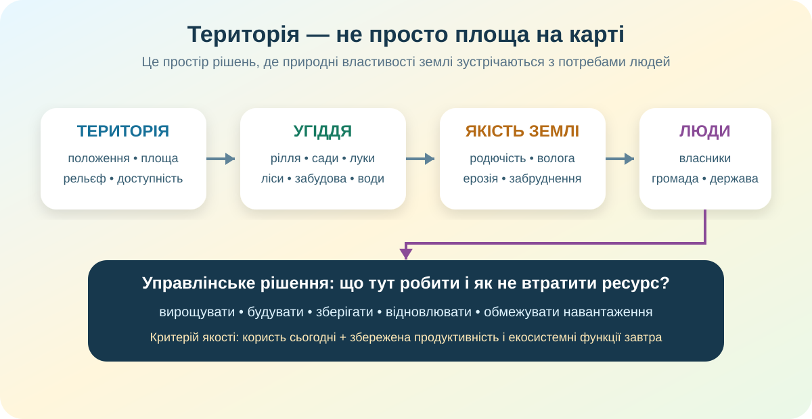

0. Стартова дилема — 3 хв
Наприкінці перевіримо, чи залишилась ця позиція незмінною. Якщо зміниться — це не помилка, а ознака того, що з’явилися нові докази.
1. Територія як ресурс: дивимося на простір, а не на таблицю — 5 хв
Чому однакова площа у двох громадах може мати різну господарську цінність?
Які ділянки на карті Ви б одразу не віддали під суцільну забудову: заплави, круті схили, ліси, водно-болотні угіддя? Чому?
«Більша площа = більше можливостей» — надто грубе твердження. Важливі положення, доступність, якість ґрунтів, вода, рельєф, екологічні обмеження й уже наявна інфраструктура.
2. Геодані: скільки землі ми реально бачимо в кадастрі? — 4 хв
За актуальною інформацією Держгеокадастру, у кадастрі зареєстровано близько 46,2 млн га земель, із них приблизно 33,2 млн га — сільськогосподарські землі. Це не означає, що «все треба розорати»: категорія землі описує використання, а не дає автоматичної відповіді, яке рішення є найкращим для кожної ділянки.
3. Кейс «Що робити з ділянкою?» — 6 хв

4. Хто вирішує, що буде з територією громади? — 5 хв
За КТП досліджуємо не лише землю, а й учасників управління територіальною громадою. Зіставте інтереси: вони можуть конфліктувати, і це нормально — ненормально лише робити вигляд, що конфлікту немає.
Мешканці
Житло, робочі місця, безпечне довкілля, доступ до води й зелених зон.
Бізнес
Доступність ділянки, інфраструктура, витрати, прогнозовані правила.
Місцева влада
Бюджет, просторовий розвиток, послуги, баланс інтересів і законність.
Екологи / науковці
Стан ґрунтів, води, біорізноманіття, ризики деградації та відновлюваність.
5. Коротке відео — 3 хв
Подивіться фрагмент 04:56–07:46: земельні ресурси, чорноземи та їх значення. Не переписуйте відео — знайдіть одну тезу, яку можна підтвердити картою або даними.
6. Теорія після дослідження — 3 хв
Територія як ресурс
Дає простір для населення, господарства, інфраструктури, природних ресурсів і зв’язків. Її цінність залежить не лише від площі, а й від властивостей та положення.
Земельні угіддя
Рілля, багаторічні насадження, сіножаті, пасовища, ліси, забудовані землі, води та інші категорії мають різні функції й обмеження.
Родючість
Здатність ґрунту забезпечувати рослини водою, поживними речовинами й умовами для росту. Вона важлива для землеробства, але може погіршуватися через ерозію, виснаження, ущільнення й забруднення.
Раціональне використання
Не «використати максимум», а отримати користь без втрати продуктивності землі та екосистемних функцій у майбутньому.
7. CER — 3 хв
Питання: чи можна вважати родючу земельну ділянку «вільним місцем для забудови», якщо вона юридично доступна?
8. Домашнє завдання
Електронний підручник
Опрацюйте §47 «Яке значення має територія держави та її земельні ресурси».
Відкрити §47Різнорівневе завдання
База: назвіть 3 функції території.
Середній: знайдіть у своїй громаді 2 типи земельних угідь і поясніть їх функції.
Високий: оберіть реальну ділянку в межах громади та напишіть 5-реченневу рекомендацію: що там доцільно робити, чого уникати й чому.
9. Тест — 10 балів
Джерела й перевірка даних
Держгеокадастр — актуальні показники наповненості кадастру та площі земель; OpenStreetMap — базова карта; Copernicus Browser і NASA Worldview — супутникові дані; підручник Гільберг Т.Г., Довгань А.І., Савчук І.Г., 8 клас, 2025; відео «Географія ПРОСТО» до цієї теми.